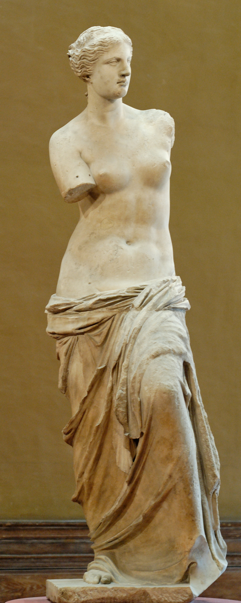
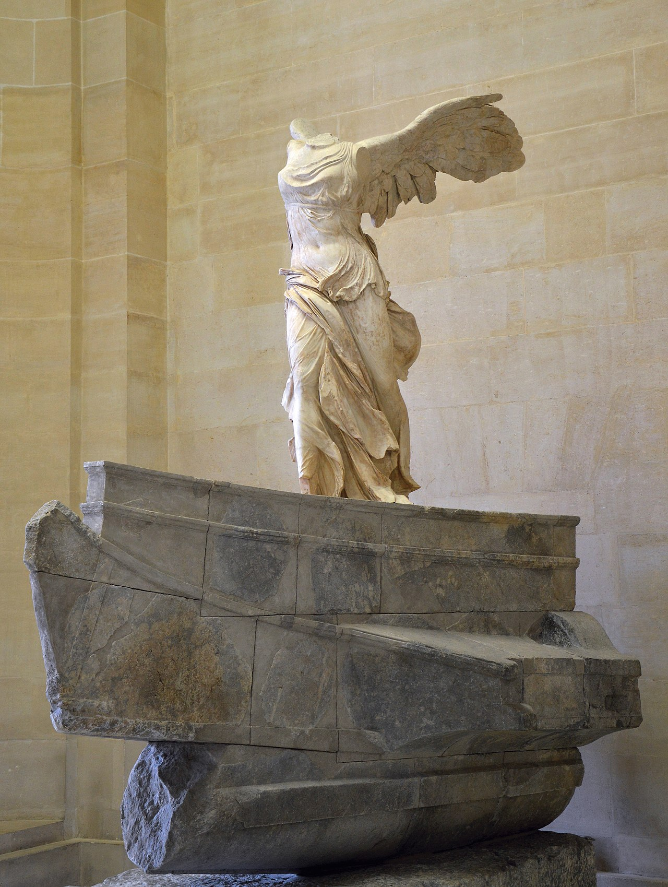
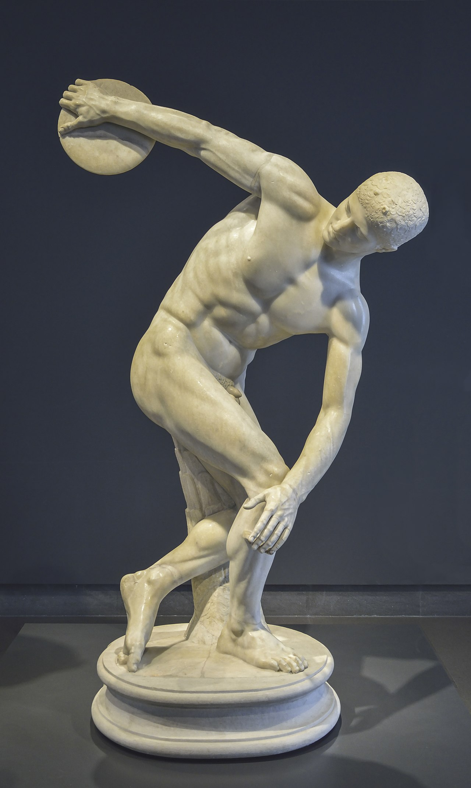
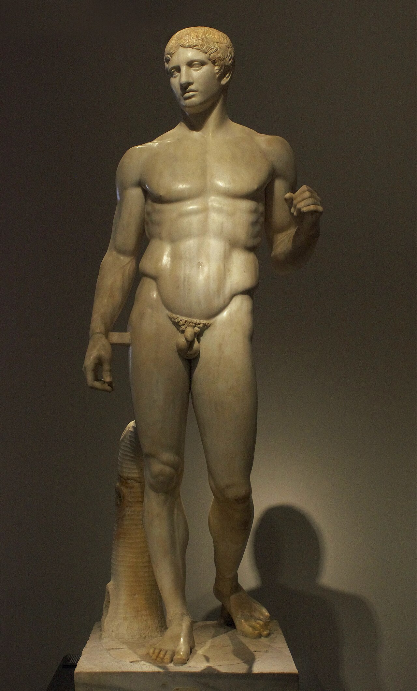
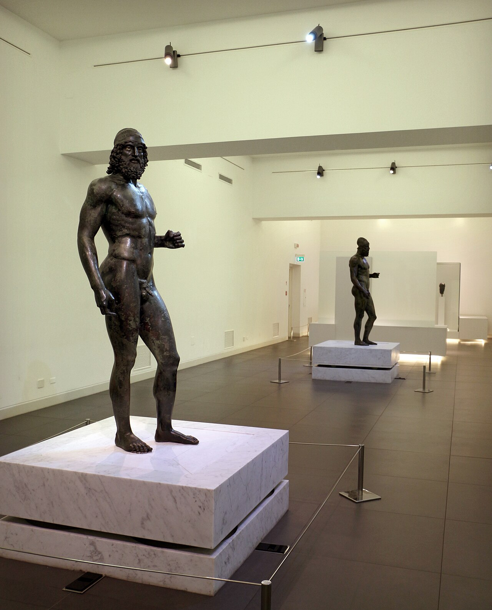
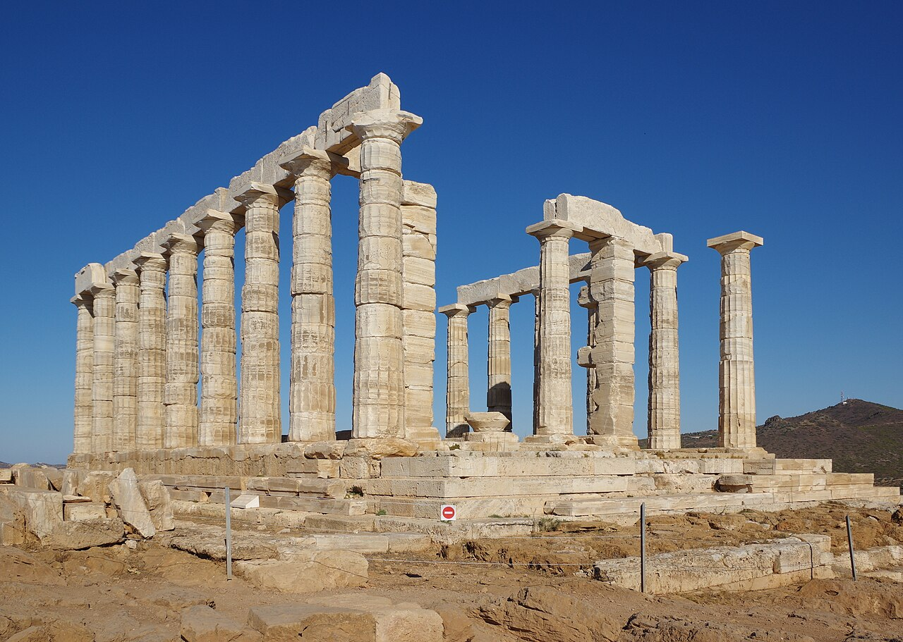
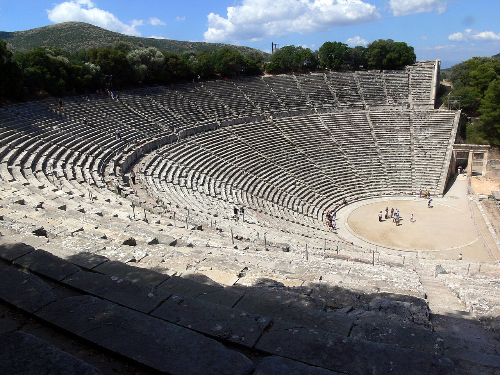
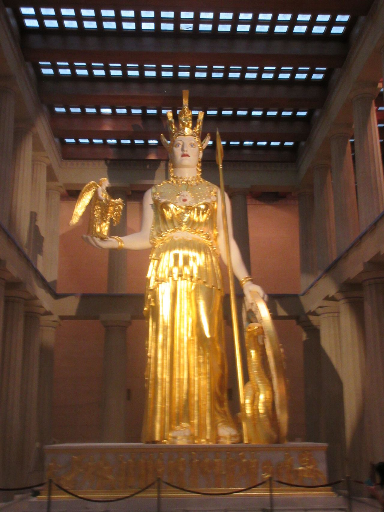

🏆 Meesterwerk: De Parthenon
Het ultieme symbool van klassieke Griekse architectuur en democratie

Athene, 447-432 v.Chr. · Architecten: Ictinus en Callicrates
🎨 STIJLFIGUREN & THEMA'S
🖼️ Voorstelling
Idealisering: Perfecte menselijke proporties. Het menselijk lichaam als maat aller dingen.
✨ Materiaal
Marmer: Wit Pentelisch marmer voor beelden en tempels. Oorspronkelijk beschilderd.
📐 Proporites
Kanon: Polykleitos' "Kanon" - 7 koppen hoog, wiskundige verhoudingen.
🏛️ Architectuur
Ordes: Dorisch, Ionisch, Korinthisch. Zuilen, frontons, friezen.
🎨 Kleur
Polychromie: Beelden en tempels waren oorspronkelijk kleurrijk beschilderd.
👁️ Expressie
Beheersing: Rustige gelaatstrekken, geconcentreerde blik. Emoties onder controle.
🎯 Centrale Thema's
- Het ideaal van kalokagathia: Schoonheid en deugd zijn één
- Humanisme: De mens als maat aller dingen (Protagoras)
- Rationaliteit: Wiskunde, geometrie, proportie bepalen schoonheid
- Mythologie: Goden en helden als onderwerp
- Nacktheid: Het naakte lichaam als uitdrukking van perfectie
🖼️ TOP 10 MEEST INVLOEDRIJKE WERKEN
1. De Parthenon (447-432 v.Chr.)
Akropolis, Athene · Architecten: Ictinus en Callicrates · Dorische orde
Achtergrond: Gebouwd in opdracht van Pericles ter ere van de godin Athena, beschermvrouwe van Athene. Het hoogtepunt van de klassieke Griekse architectuur.
🔍 STIJLANALYSE
Dorische orde: Eenvoudige kapiteel, geen basis. 8x17 zuilen. Entasis (zwelling) voor visuele correctie.
Proporites: Gulden snede verhoudingen. 69,5 x 30,9 meter.
Beeldhouwwerk: Phidias' friezen en metopen. Panathenaic Processie, Amazonomachie, Centauromachie.
2. Venus van Milo (ca. 130-100 v.Chr.)
Louvre, Parijs · Marmer · 203 cm hoog · Hellenistisch

Achtergrond: Gevonden op het eiland Melos in 1820. Waarschijnlijk Aphrodite (Venus). Een van de beroemdste Griekse beelden.
🔍 STIJLANALYSE
S-vorm: Contraposto houding - gewicht op één been, heupen gedraaid.
Draperie: Realistische weergave van stof die van de heupen glijdt.
Mysterie: Ontbrekende armen - wat hield ze vast? Appel? Spiegel? Schild?
3. Nike van Samothrace (ca. 190 v.Chr.)
Louvre, Parijs · Marmer · 244 cm hoog · Hellenistisch

Achtergrond: Gevonden in het heiligdom van de Grote Goden op Samothrace. Victoria (overwinning) op de boeg van een oorlogsschip.
🔍 STIJLANALYSE
Beweging: Nike landt op het schip, kleding waait in de wind. Dramatisch en dynamisch.
Textuur: Dunne, doorweekte stof (natdraperie) die het lichaam volgt.
Compositie: Diagonaal, voorwaarts bewegend. De kijker wordt betrokken.
4. Discobolus (ca. 460-450 v.Chr.)
Origineel bronzen (verloren) · Romeinse marmer kopieën · Myron

Achtergrond: Een atleet in de moment vlak voor de worp. Het klassieke ideaal van geconcentreerde beweging.
🔍 STIJLANALYSE
Bevriezing: Het spanningsvolle moment vastgelegd in steen. Geconcentreerde rust.
Compositie: Spiraalvormig, meerdere gezichtspunten. Ruggengraat als as.
Realisme: Gespierde atletenlijf, anatomisch correct. Gezicht kalm, lichaam actief.
5. Doryphoros (Speerdrager) (ca. 440 v.Chr.)
Origineel bronzen (verloren) · Polykleitos · Romeinse kopieën

Achtergrond: Polykleitos schreef de "Kanon" - een traktaat over perfecte proporties. Dit beeld is de belichaming ervan.
🔍 STIJLANALYSE
Contrapposto: Gewicht op rechterbeen, linker ontspannen. Heupen en schouders tegenovergesteld.
Proporites: 7 koppen hoog. Wiskundige verhoudingen tussen lichaamsdelen.
Evenwicht: Statisch en dynamisch tegelijk. De perfecte atleet.
6. Laocoöngroep (ca. 25 v.Chr.)
Vaticaanse Musea, Rome · Marmer · Hellenistisch · Agesander, Athenodorus, Polydorus

Achtergrond: Laocoön, Trojaanse priester, gewaarschuwd tegen het houten paard. Goden straffen hem met slangen.
🔍 STIJLANALYSE
Drama: Intens lijden, spieren gespannen, mond open in schreeuw. Pathos.
Compositie: Piramidaal. Laocoön in het midden, zonen aan weerszijden.
Detail: Slangen kronkelen door de compositie, verbinden de figuren.
7. Riace Bronzen (ca. 460-430 v.Chr.)
Museo Nazionale, Reggio Calabria · Brons · 198 cm hoog

Achtergrond: In 1972 gevonden voor de kust van Riace. Twee levensgrote bronzen krijgers. Zeldzame Griekse bronzen.
🔍 STIJLANALYSE
Techniek: Verloren wasmethode. Ogen van glas, tanden van zilver, lippen van koper.
Contraposto: Gewicht op één been, ontspannen houding.
Realisme: Aders, spieren, haartjes. Anatomische perfectie.
8. Sounion Kouros (ca. 580 v.Chr.)
Nationaal Archeologisch Museum, Athene · Marmer · 305 cm hoog · Archaïsch

Achtergrond: Een "kouros" - standbeeld van een naakte jonge man. Vroegste vorm van levensgrote Griekse beeldhouwkunst.
🔍 STIJLANALYSE
Frontaal: Recht naar voren, linkervoet naar voren. Egyptische invloed.
Archaïsche glimlach: Vage, enigmatische glimlach. Kenmerkend voor vroege periode.
Geometric: Blokvormig, vlakke spieren. Nog niet naturalistisch.
9. Theater van Epidauros (ca. 340 v.Chr.)
Epidauros, Griekenland · Architect: Polykleitos de Jongere

Achtergrond: Het best bewaarde Griekse theater. 14.000 toeschouwers. Perfecte akoestiek.
🔍 STIJLANALYSE
Semi-cirkel: 55 rijen in perfecte halve cirkel. Iedereen ziet het podium.
Akoestiek: Fluistering op het podium is hoorbaar in de hoogste rij.
Harmonie: Landschap en architectuur versmelten. Natuur als decor.
10. Athena Parthenos (ca. 438 v.Chr.)
Origineel: goud en ivoor (verloren) · Phidias · 12 meter hoog

Achtergrond: Het cultbeeld van de Parthenon. Phidias' meesterwerk. Chryselefantine (goud en ivoor) techniek.
🔍 STIJLANALYSE
Monumentaal: 12 meter hoog, staand in de cel. Overweldigend.
Attributen: Helm, schild met Medusa, Nikè in hand, speer.
Materialen: Ivoor voor huid, goud voor kleding (1 ton goud!).
📚 TIJDSGEEST CONTEXT (800-31 v.Chr.)
🌍 POLITIEK PERSPECTIEF
De Oud-Griekse kunst ontwikkelde zich binnen een uniek politiek landschap van onafhankelijke stadstaten (poleis) die elk hun eigen regeringsvorm hadden. In tegenstelling tot de grote keizerrijken van Egypte en Perzië, bleef Griekenland een lappendeken van enkele honderden poleis, variërend van machtige steden als Athene en Sparta tot kleine gemeenschappen van enkele duizenden inwoners. Deze politieke fragmentatie stimuleerde competitie tussen steden, wat zich uitte in monumentale bouwprojecten en artistieke innovatie als uiting van stedelijke trots.
De Atheense Democratie (508-322 v.Chr.) vormde het meest revolutionaire politieke experiment uit de oudheid. De hervormingen van Cleisthenes in 508 v.Chr. braken met aristocratische dominantie en introduceerden een systeem waarin alle vrije mannelijke burgers (ongeveer 30.000-40.000 van de 250.000-300.000 inwoners) direct konden stemmen in de Ekklèsia (volksvergadering). Deze democratische ervaring had diepe invloed op de kunst: openbare gebouwen werden gefinancierd door publieke middelen en moesten de waarden van de polis weerspiegelen. De Parthenon (447-432 v.Chr.), gebouwd onder leiding van Pericles met middelen van de Delische Bond, was niet slechts een tempel voor Athena, maar een politiek statement van Atheense suprematie en democratische waardigheid. De metopen en friezen toonden scènes van democratische mythen: de strijd tegen de Amazonen (barbaarse wanorde), Centauromachie (beschaafde rede versus dierlijke passie), en de Gigantomachie (kosmische orde tegen chaos).
De Perzische Oorlogen (490-479 v.Chr.) vormden een keerpunt in de Griekse zelfperceptie en kunstproductie. De overwinningen bij Marathon (490 v.Chr.), Salamis (480 v.Chr.) en Plataea (479 v.Chr.) werden gezien als triomf van Griekse vrijheid en democratie over Perzische despotie. Deze ervaring verstevigde een collectieve Griekse identiteit en leidde tot de Gouden Eeuw van Pericleisch Athene (461-429 v.Chr.). Kunstwerken uit deze periode benadrukken burgerschap, civieke deugd en individuele excellentie binnen de collectieve orde. Het Standbeeld van de Tyrannicides (Harmodius en Aristogeiton) werd herbouwd na de Perzische plundering en symboliseerde de democratische verdediging tegen tirannie.
Sparta's Militaire Oligarchie bood een scherp contrast. De Spartaanse constitutie, toegeschreven aan de legendarische wetgever Lycurgus, organiseerde de samenleving rond militaire discipline en collectieve eenvoud. Spartaanse kunst bleef bewust sobere, functionele en traditioneel, met weinig monumentale architectuur of verfijnde beeldhouwkunst. Dit politieke verschil tussen Athene en Sparta - democratische expressie versus militaire soberheid - weerspiegelde diepere filosofische verschillen over de relatie tussen individu en staat.
De Peloponnesische Oorlog (431-404 v.Chr.) tussen Athene en Sparta bracht deze gouden eeuw tot een gewelddadig einde. De oorlog, gedocumenteerd door Thucydides, decimeerde de Atheense bevolking (inclusief een verwoestende pest in 430 v.Chr. die Pericles zelf doodde) en eindigde met Atheense nederlaag en Spartaanse bezetting. Artistiek leidde dit tot een verschuiving van het serene, optimistische classicisme naar meer introspectieve, emotionele en individuele expressies. De beeldhouwkunst van de 4e eeuw v.Chr. - met kunstenaars als Praxiteles, Lysippus en Scopas - toont zachtere, meer sensuele en psychologisch complexe figuren, weerspiegelend een cultuur in crisis en bezinning.
Het Hellenistische Tijdperk (323-31 v.Chr.) volgde op de veroveringen van Alexander de Grote (336-323 v.Chr.), die het politieke landschap fundamenteel transformeerde. Na Alexanders dood verdeelde zijn rijk zich in diadochen-rijken: de Ptolemaeën in Egypte (Alexandrië), de Seleuciden in Syrië en Perzië, de Antigoniden in Macedonië. Deze koninkrijken sponsorden grootschalige kunstprojecten als legitimatie van hun macht: de Kolossus van Rhodus, het Altaar van Zeus in Pergamon, de Nike van Samothrace. Hellenistische kunst werd kosmopolitischer, technisch virtuoser en emotioneel expressiever, met werken als de Laocoöngroep die intens lijden en drama uitbeeldden. De politieke verspreiding van Griekse cultuur over het oostelijke Middellandse Zeegebied en Voor-Azië creëerde een visuele taal die eeuwenlang dominant zou blijven, tot de komst van Rome.
📖 LITERAIR PERSPECTIEF
De Griekse literatuur en kunst waren onlosmakelijk verbonden door een gedeeld repository van mythen, heldenverhalen en religieuze thema's die de basis vormden voor beide disciplines. Waar moderne kunst vaak autonoom probeert te zijn, was Griekse kunst fundamenteel verhalend en narratief: tempelfriezen, metopen, vaasschilderingen en beeldhouwwerken vertelden verhalen die elke opgeleide Griek kende uit mondelinge traditie en literaire canon.
Homerus' Epen (8e eeuw v.Chr.) vormden de fundamenten van de Griekse culturele identiteit. De Ilias en Odyssee, oorspronkelijk mondeling overgeleverd door barden (aoidoi) en rond 750 v.Chr. opgeschreven, boden een pantheon van goden en een galerij van helden die eeuwenlang het repertoire van Griekse kunstenaars zouden bepalen. De Ilias, met zijn verhaal van de toorn van Achilles tijdens het beleg van Troje, leverde scènes als de dood van Patroclus, de wapenrusting van Achilles, en de teruggave van het lichaam van Hector. De Odyssee, met de zwerftochten van Odysseus, bood avontuurlijke episodes als de blindmaking van Polyphemus, de verleiding van de Sirenen, en de thuiskomst naar Penelope. Vrijwel elk Grieks kunstwerk dat mythologische scènes uitbeeldt, kan worden herleid naar Homerus of diens latere navolgers.
Het Griekse Theater (6e-4e eeuw v.Chr.) ontwikkelde zich uit religieuze Dionysuscultus en werd een van de belangrijkste culturele instellingen van de polis. De grote tragediedichters - Aeschylus (525-456 v.Chr., Oresteia-trilogie), Sophocles (496-406 v.Chr., Oedipus Rex, Antigone), en Euripides (480-406 v.Chr., Medea, Bacchae) - exploreerden thema's van noodlot, goddelijke gerechtigheid, menselijke passie en morele ambiguïteit. Deze tragedies werden jaarlijks opgevoerd tijdens de Dionysia-festivals en bijgewoond door duizenden burgers. De visuele kunsten weerspiegelden deze thema's: op Athenese rode-figuur vazen uit de 5e eeuw v.Chr. verschijnen scènes uit de tragedies, en beeldhouwwerken zoals de Laocoöngroep (hoewel later, ca. 25 v.Chr.) vertonen de pathos en dramatische intensiteit die kenmerkend waren voor het theater. De komedies van Aristophanes (446-386 v.Chr.) boden maatschappijkritiek en politieke satire, wat de rol van kunst als forum voor publieke discussie benadrukte.
Lyrische Poëzie van dichters als Sappho (ca. 630-570 v.Chr.), Pindarus (518-443 v.Chr.) en Alcaeus bood meer persoonlijke, emotionele expressies die ook in de beeldende kunst resoneren. Sappho's verzen over liefde en verlangen weerspiegelen in de zinnelijke weergave van Afrodite en vrouwelijke figuren in hellenistische kunst. Pindarus' overwinningsoden (epinikia) voor atleten benadrukten het ideaal van arete (excellentie) dat ook in atletische beelden als de Discobolus en Doryphoros werd verbeeld.
Esthetische Theorie ontwikkelde zich parallel met literaire productie. Plato (428-348 v.Chr.) leverde in zijn Republiek felle kritiek op kunst als "tweemaal verwijderd van de werkelijkheid" - een nabootsing van een nabootsing - en waarschuwde voor de emotionele manipulatie van poëzie en theater. Zijn dialoog De Staat stelde voor dichters uit de ideale polis te verbannen. Aristoteles (384-322 v.Chr.) bood in zijn Poëtica een meer nuancierte verdediging: kunst als mimesis (naboosting) die universele waarheden kan uitdrukken, en tragedie als katharsis (reiniging) van angst en medelijden. Deze filosofische debatten over de aard, functie en waarde van kunst vormden de basis voor de westerse esthetiek en beïnvloedden hoe Griekse kunstenaars hun werk begrepen.
Historiografie van Herodotus (484-425 v.Chr., "vader van de geschiedenis") en Thucydides (460-395 v.Chr.) documenteerde de gebeurtenissen die in kunstwerken werden gevierd of herdacht. Herodotus' Historiën beschreven de Perzische Oorlogen die in tempeldecoraties (zoals de Atheners op de Parthenon-metopen die Amazonen bevechten, als allegorie voor Perzen) werden verbeeld. Thucydides' Geschiedenis van de Peloponnesische Oorlog bood een analytisch verslag van de crisis die de artistieke verschuiving van klassiek naar laat-klassiek en hellenistisch vergezelde.
Mythologie als Gedeelde Taal: De Griekse mythen van goden en helden - Zeus, Athena, Apollo, Artemis, Aphrodite, Ares, Demeter, Dionysus, en helden als Heracles, Theseus, Perseus, Jason - vormden een visuele vocabulaire die elke Griek verstond. Tempels werden gewijd aan specifieke godheden met passende decoraties: de Parthenon aan Athena (beschermvrouwe van Athene), de Tempel van Zeus in Olympia (met Phidias' kolossale Zeus-beeld), het Theater van Dionysus in Athene. Vaasschilderingen toonden scènes uit het dagelijks leven (symposia, atletiek, oorlog) maar ook mythologische verhalen die morele lessen, religieuze waarheden of simpelweg esthetisch genot boden. Deze integratie van literatuur en beeldende kunst creëerde een culturele continuïteit waarin tekst en beeld elkaar versterkten en verduidelijkten.
🧠 PSYCHOLOGISCH PERSPECTIEF
De Griekse cultuur ontwikkelde een uniek concept van het zelf dat fundamenteel verschilde van moderne individuele psychologie. Waar wij het zelf zien als een autonome, innerlijke entiteit, begrepen de Grieken identiteit primair in relationele termen: men was Athener of Spartaan, vrij of slaaf, man of vrouw, burger of buitenlander. Deze sociale definities bepaalden iemands plaats in de kosmos en de verwachtingen van gedrag. Toch ontwikkelde zich binnen deze kaders een rijke verkenning van menselijke psychologie die in de kunst zichtbaar werd.
Kalokagathia: De Eenheid van Schoonheid en Deugd vormde het centrale psychologische ideaal. Kalos (schoon) en agathos (deugdzaam) werden niet als gescheiden domeinen gezien maar als twee aspecten van één excellentie. Een fysiek perfect lichaam weerspiegelde morele perfectie; een deugdzaam karakter zou zich uiten in fysieke schoonheid. Dit concept doordreef alle aspecten van Griekse cultuur: atletiek (gymnasion), militaire training, en kunstproductie. De naakte atletische figuren in Griekse beeldhouwkunst - de Doryphoros, Discobolus, Apoxyomenos - zijn niet slechts esthetische objecten maar belichamingen van deze psycho-fysieke eenheid. De gymnasium, waar mannen trainden in naaktheid (gymnos = naakt), was zowel fysieke als morele vorming, en de kunst die daaruit voortkwam vierde deze holistische visie op menselijke excellentie.
Gnōthi Seauton: De Spreuk van Delphi ("Ken uzelf") stond gegraveerd in de tempel van Apollo in Delphi en moedigde introspectie en zelfkennis aan. Deze aansporing had meerdere betekenissen: ken uw sterfelijke beperkingen (u bent geen god), ken uw maatschappelijke positie en verplichtingen, ken uw eigen psyche en passies. Griekse tragedies exploreerden consequenties van het ontbreken van zelfkennis - Oedipus die niet weet wie hij is, Medea die overweldigd wordt door wraakzucht, Agamemnon die trots en dwaasheid niet herkent. In de beeldende kunst vertaalde dit zich naar afbeeldingen van hybris (arrogante overmoed) en nemesis (goddelijke vergelding): de Gigantomachie toonde reuzen die de goden uitdaagden en werden verslagen, de Niobe-groep beeldde een moeder af die zich boven de goden verhief en al haar kinderen verloor.
Plato's Psychologie bood een systematische theorie van de ziel (psyche). In De Staten ontwikkelde Plato een driedeling: logos (rede, ratio), thymos (wil, moed, eer), en epithymia (begeerte, driften). De gezonde ziel was een harmonie waarin rede heerste over de lagere elementen, zoals een wagenmenner die twee paarden stuurt (de metafoor uit Phaedrus). Deze psychologische structuur had directe artistieke implicaties: Griekse beelden tonen figuren wiens gelaatsuitdrukkingen rust, concentratie en beheersing uitstralen, zelfs in fysiek intensieve handelingen. De Discobolus van Myron, vastgelegd in het moment vlak voor de worp, toont een lichaam in extreme torsie maar een gelaat van serene concentratie - de rede heerst over fysieke inspanning.
Aristoteles' Eudaimonia ("geluk" of "bloei") bood een meer aardse psychologische visie. In de Nicomachische Ethiek definieerde Aristoteles het goede leven niet als plezier of rijkdom, maar als activiteit van de ziel in overeenstemming met deugd (aretē). Eudaimonia vereiste de ontwikkeling van excellence in alle domeinen: intellectueel, moreel, fysiek, sociaal. Dit concept resonereerde in de Griekse opvoeding (paideia) die jonge burgers vormde tot complete mensen. De kunst die uit deze cultuur voortkwam - de idealiserende beelden, de harmonieuze architectuur, de gebalanceerde composities - weerspiegelden dit streven naar evenwichtige uitmuntendheid.
Sophrosyne: Matigheid en Beheersing was een centrale deugd die "gezondheid van geest" betekende - zelfbeheersing, gematigdheid, harmonie met zichzelf en de gemeenschap. De Griekse afkeer van excessief gedrag (hubris) uitte zich in kunst die waardigheid, rust en proportie vierde. Archaïsche beelden (kouroi en korai) tonen de "archaïsche glimlach" - een enigmatische, serene uitdrukking die transcendentie en innerlijke rust suggereert. Klassieke beelden ontwikkelden wat Winckelmann later zou noemen "edle Einfalt und stille Größe" (nobele eenvoud en stille grootsheid) - een esthetiek van beheersing die de stormen van passie bevat binnen harmonieuze vorm.
Hellenistische Psychologische Expressie brak met deze beheersing. Na de veroveringen van Alexander de Grote (323 v.Chr.) en de politieke onrust die volgde, werd kunst emotioneler, individueller, psychologisch complexer. De Laocoöngroep (ca. 25 v.Chr.) toont intens lichamelijk en emotioneel lijden: spieren gespannen, mond open in schreeuw, gezicht vertrokken in doodsangst. De Doodskinderen (een groep in het Vaticaan) beelden de laatste momenten van een stervend kind uit. De Oude Marktvrouw (in de Met) toont ouderdom, vermoeidheid, menselijke fragiliteit - thema's die in klassieke kunst zelden werden afgebeeld. De Drunken Old Woman (in de Glyptothek München) combineert humor en pathos. Deze werken tonen een cultuur die de volledige menselijke ervaring omarmde: niet alleen de geïdealiseerde jeugd en kracht, maar ook ouderdom, ziekte, intoxicatie, dood, en emotionele extase. De psychologische diepgang van hellenistische kunst zou eeuwenlang ongeëvenaard blijven tot de barok.
🏛️ HISTORISCH PERSPECTIEF
De Oud-Griekse kunst beslaat meer dan zeven eeuwen (ca. 800-31 v.Chr.) en evolueerde door drie grote periodes die elk hun eigen visuele taal, thema's en technische innovaties ontwikkelden. Deze periodisering, hoewel modern en soms kunstmatig, helpt om de dynamische ontwikkeling van Griekse esthetiek te begrijpen binnen veranderende historische omstandigheden.
Archaïsche Periode (ca. 800-480 v.Chr.) zag de hergeboorte van de Griekse beschaving na de "Dark Ages" die volgden op de val van de Myceense cultuur (ca. 1100 v.Chr.). De 8e eeuw bracht de opkomst van de poleis, de introductie van het alfabet (van de Feniciërs), en de eerste monumentale beeldhouwkunst. Vroege Griekse beeldhouwers waren sterk beïnvloed door Egyptische modellen: kouroi (naakte jonge mannen) en korai (geklede jonge vrouwen) stonden frontaal, met linkervoet naar voren, armen langs het lichaam of licht gebogen, in een starre, blokvormige compositie. Maar waar Egyptische beelden deel uitmaakten van een theocratische, onveranderlijke traditie, ontwikkelden Griekse beelden unieke elementen: de "archaïsche glimlach" (een enigmatische, lichtjes opgetrokken mondhoeken die leven en sereniteit suggereerden), en vooral de nadruk op naaktheid bij mannelijke figuren - iets dat in Egypte ongebruikelijk was. De kouroi, oorspronkelijk grafmonumenten en votiefgeschenken, evolueerden over drie eeuwen van de enorme, grove Sounion Kouros (ca. 580 v.Chr., 3 meter hoog) naar de verfijnde, anatomisch nauwkeurigere Anavysos Kouros (ca. 530 v.Chr.) en Kroisos Kouros (ca. 540 v.Chr.). De korai, vaak gewijd aan Athena, toonden evoluerende draperie-weergave en toenemende naturalisme in haardracht en gelaatstrekken.
Overgang naar Klassiek (ca. 510-480 v.Chr.) werd gekenmerkt door de "Strenge Stijl" (Severe Style) die de archaïsche glimlach verliet voor serieuze, geconcentreerde gelaatsuitdrukkingen. De Efebe van Kritias (ca. 480 v.Chr.) en de Wagenmenner van Delphi (ca. 470 v.Chr.) tonen deze overgang: vlakke, sobere gezichten met intense blik, het begin van contrapposto (gewicht op één been, heupen gedraaid), en een nieuwe nadruk op individualiteit. Deze ontwikkeling viel samen met de Atheense democratie (508 v.Chr.) en de Perzische Oorlogen, die een nieuwe ernst en burgers bewustzijn meebrachten.
Klassieke Periode (480-323 v.Chr.) vormde het hoogtepunt van Griekse artistieke prestatie en invloed. De vroege klassieke periode (480-450 v.Chr.) zag de volledige ontwikkeling van contrapposto in het werk van Polykleitos, wiens Doryphoros (Speerdrager, ca. 440 v.Chr.) de "Kanon" van perfecte proporties verwezenlijkte: 7 koppen hoog, wiskundige verhoudingen tussen lichaamsdelen, balans tussen spanning en ontspanning. De hoog-klassieke periode (450-400 v.Chr.), gedomineerd door Pericleisch Athene (461-429 v.Chr.), bracht de grootste meesters: Phidias (Athena Parthenos, Zeus van Olympia), Myron (Discobolus), en Phidias' atelier voor de Parthenon-sculpturen (447-432 v.Chr.). De Parthenon vertegenwoordigde de synthese van architectuur en beeldhouwkunst, met het Panathenaeïsche Fries (160 meter lang, 375 figuren), 92 metopen met mythologische gevechten, en de frontons met de geboorte van Athena en de strijd om Athene. De late klassieke periode (400-323 v.Chr.) bracht zachtere, meer individuele stijlen: Praxiteles (Aphrodite van Knidos, ca. 350 v.Chr., eerste levensgrote naakte vrouwelijke figuur), Lysippus (Apoxyomenos, kleinere koppen, 8 koppen hoog), Scopas (intense emotionele expressie in gelaatstrekken).
Hellenistische Periode (323-31 v.Chr.) volgde op de dood van Alexander de Grote en zag de verspreiding van Griekse cultuur over het enorme gebied van Egypte tot Afghanistan. De diadochen-rijken (Ptolemaeën in Egypte, Seleuciden in Syrië, Attaliden in Pergamon) werden grote kunstpatrons die monumentale werken sponsorde als legitimatie van hun macht. Het Altaar van Zeus in Pergamon (ca. 180 v.Chr.), met zijn gigantische fries van de Gigantomachie (120 meter lang, levensgrote figuren in intens gevecht), vertegenwoordigde hellenistische voorliefde voor drama, beweging, en emotionele intensiteit. De Laocoöngroep (ca. 25 v.Chr.) toonde de Trojaanse priester en zijn zonen gewurgd door slangen - een meesterwerk van pathos, spier spanning, en technologische virtuositeit. De Nike van Samothrace (ca. 190 v.Chr.) beeldde de godin van overwinning af landend op een oorlogsschip, met draperie die in de wind waaide en het lichaam eronder zichtbaar maakte - een hoogtepunt van dynamische compositie en textuurweergave. De Venus van Milo (ca. 130-100 v.Chr.) combineerde klassieke idealisering met hellenistische sensualiteit. Hellenistische kunst omarmde de volledige menselijke ervaring: ouderdom (Oude Marktvrouw), intoxicatie (Dronken Oude Vrouw), ethnische diversiteit (Afrikaanse figuren), pathos (Stervende Galliër), en psychologische complexiteit.
Technologische Innovaties maakten deze artistieke evolutie mogelijk. Griekse kunstenaars werkten in marmer (vooral Pentelisch marmer uit Attica), brons, terracotta, en schilderkunst (nu grotendeels verloren, behalve vaasschilderingen en gevonden fresco's in Macedonië en Zuid-Italië). De verloren wasmethode (cire perdue) voor brons gieten, waarschijnlijk overgenomen van Egyptenaren maar door Grieken verfijnd, maakte vrijstaande, dynamische beelden mogelijk die marmer niet kon evenaren - bronzen beelden konden ledematen volledig vrij van het lichaam hebben, terwijl marmer figuren steunpunten nodig hadden. De Riace Bronzen (ca. 460-430 v.Chr., 198 cm hoog) tonen deze technologische virtuositeit: ogen van glas, tanden van zilver, lippen van koper, uitstekende anatomische details. Vaasschildering ontwikkelde van geometrische stijl (8e eeuw) naar zwarte-figuur techniek (7e-6e eeuw) naar rode-figuur techniek (5e-4e eeuw), die verfijnde anatomische details en overgangen mogelijk maakte.
Romeinse Overname en Bewaring bepaalde wat er van Griekse kunst overbleef. De Romeinse verovering van Griekenland (146 v.Chr.) leidde tot massale plundering en export van Griekse meesterwerken naar Rome. Romeinse patriciërs, zoals Verres en Cicero, verzamelden Griekse kunst fanatiek. Romeinse kunstenaars maakten talloze marmeren kopieën van Griekse bronzen originelen (zoals de Doryphoros, Discobolus, Aphrodite van Knidos) - vaak het enige dat overbleef van verloren werken. De verbranding van Rome in 64 n.Chr., de inval van de Visigothen in 410 n.Chr., en eeuwen van vernieling vernietigden veel, maar wat bewaard bleef - in schipwrakken (Antikythera, Riace), begraven in vulkanische as (Pompeii, Herculaneum), of in Romeinse collecties - vormde de basis voor de Renaissance-herontdekking en onze moderne begrip van Griekse kunst.
💭 FILOSOFISCH PERSPECTIEF
Griekse filosofie en kunst waren niet gescheiden domeinen maar interdependent onderzoeksvelden die beide probeerden de aard van schoonheid, waarheid, en de werkelijkheid te begrijpen. Waar moderne esthetiek vaak subjectief en psychologisch is, zochten Griekse denkers naar objectieve, universele principes die schoonheid definieerden en kunst konden leiden. Deze filosofische zoektocht naar kosmische orde, wiskundige verhoudingen, en metafysische waarheden vormde de intellectuele fundering voor Griekse artistieke productie.
Pythagoras en Kosmische Harmonie (ca. 570-495 v.Chr.) legde de basis voor een wiskundige benadering van schoonheid. Pythagoras en zijn school ontdekten dat muzikale intervallen (octaaf, kwint, kwart) correleerden met eenvoudige wiskundige verhoudingen (2:1, 3:2, 4:3) en concludeerden dat het universum zelf werd geregeerd door harmonieuze wiskundige principes - de "harmonie der sferen." Deze opvatting had directe artistieke implicaties: als het universum wiskundig geordend was, moest ook kunst wiskundig geordend zijn om schoon en waarachtig te zijn. De toepassing van de gulden snede (phi = 1.618...), hoewel waarschijnlijk pas later systematisch toegepast, weerspiegelde dit streven naar perfecte verhoudingen. Griekse architectuur - de Parthenon, de Tempel van Zeus in Olympia - vertoonde deze wiskundige precisie in de verhoudingen van lengte tot breedte, zuilafstanden tot zuildiameter, en de verhouding van fronton tot gevel. Polykleitos' "Kanon" (ca. 440 v.Chr.) was een filosofisch traktaat verwezenlijkt in marmer: een systematische verkenning van perfecte menselijke proporties gebaseerd op wiskundige principes.
Plato's Idea-theorie en Kunstkritiek (428-348 v.Chr.) vormde de meest invloedrijke en controversiële filosofische positie ten opzichte van kunst. In de Republiek ontwikkelde Plato zijn theorie van Ideas (Eidos): de zichtbare wereld was slechts een onvolmaakte kopie van perfecte, eeuwige, onveranderlijke vormen die alleen door intellect toegankelijk waren. Een stoel in de zichtbare wereld was een nabootsing van de Idee "Stoel"; een schilderij van een stoel was een nabootsing van een nabootsing, dus "tweemaal verwijderd van de werkelijkheid." Plato wantrouwde kunst om drie redenen: (1) Kunst was epistemologisch bedrieglijk - het bootste slechts na, zonder ware kennis; (2) Kunst was moreel gevaarlijk - het beroep deed op de lagere delen van de ziel (emoties, begeerte) en kon irrationaliteit stimuleren; (3) Kunst was politiek subversief - in de ideale staat moest alles dienen tot het gemeenschappelijk goed, en kunst die individuele passies opwekte was staatsgevaarlijk. In boek X van de Republiek stelde Plato voor dichters (kunstenaars) te verbannen uit de ideale polis, of hen te dwingen alleen nuttige, deugdzame verhalen te vertellen. Deze kritiek, hoewel extreme, weerspiegelde een serieuze bezorgdheid over de kracht en verantwoordelijkheid van kunst. Paradoxaal genoeg was Plato zelf een literair begaafd schrijver wiens dialogen kunstzinnige kwaliteit hadden.
Aristoteles' Verdediging van Kunst (384-322 v.Chr.) bood een genuanceerd alternatief. In de Poëtica definieerde Aristoteles kunst als mimesis (naboosting), maar waar Plato mimesis als bedrog zag, begreep Aristoteles het als een middel om universele waarheden uit te drukken. Waar geschiedenis beschreef wat was gebeurd (particulier), toonde tragedie wat zou kunnen gebeuren (universeel). Kunst was niet "tweemaal verwijderd van waarheid" maar een manier om essenties te vatten die de alledaagse werkelijkheid overschreden. Aristoteles ontwikkelde ook het concept van katharsis: tragedie reinigde de toeschouwer van angst (phobos) en medelijden (eleos) door deze emoties te stimuleren en dan op te lossen binnen de veilige context van theatrale ervaring. Dit gaf kunst een therapeutische, psychologische functie die Plato had genegeerd. Voor Aristoteles was schoonheid verbonden met orde, symmetrie, en bepaaldheid (Metaphysica XIII) - concepten die direct toepasbaar waren op visuele kunst. Zijn ethiek van de gulden middenweg (de deugd tussen extremen) resonereerde in Griekse kunst die beheersing, evenwicht en matigheid vierde.
Aretē: Excellentie als Levensdoel was een concept dat filosofie, ethiek en esthetiek verbond. Aretē (vaak vertaald als "deugd" maar beter als "excellentie" of "kwaliteit") doordrong alle aspecten van Griekse cultuur: de arete van een mes was zijn scherpte, de arete van een paard zijn snelheid, de arete van een mens zijn morele en intellectuele excellentie. Homerus' helden waren aretē in actie: Achilles' dapperheid, Odysseus' slimheid. De filosofen systematiseerden dit concept: voor Socrates (469-399 v.Chr.) was kennis de sleutel tot aretē (niemand doet willens en wetens kwaad); voor Plato waren de vier kardinale deugden wijsheid (sophia), moed (andreia), matigheid (sophrosyne), en gerechtigheid (dikaiosynē); voor Aristoteles was aretē een gewoonte van excellente handeling die leidde tot eudaimonia (bloei, geluk). Dit concept had directe artistieke manifestatie: Griekse beelden toonden niet gewone mensen maar geïdealiseerde exemplaren van menselijke aretē - atleten in perfecte fysieke conditie, goden in onsterfelijke schoonheid, helden in waardige concentratie. Kunst was geen realistische documentatie maar filosofische verkenning van wat menselijke excellentie kon zijn.
De Mens als Microkosmos was een filosofisch concept dat het menselijk lichaam begreep als een kleine afspiegeling van het universum. Als het universum werd geregeerd door wiskundige harmonie, zo redeneerden Griekse denkers, dan moest ook het menselijk lichaam wiskundige principes vertonen. De gulden snede verscheen in vingerlengtes, gezichtsverhoudingen, de navel-tot-hoofd verhouding. De vitruvius-man (later beroemd door Leonardo da Vinci) had zijn wortels in Griekse theorieën van menselijke proportie. Deze opvatting gaf de naakte menselijke figuur een kosmologische betekenis: het naakte lichaam in Griekse kunst was niet obsceen of pornografisch maar een filosofisch statement over de plaats van de mens in een geordend universum. De naaktheid van atletische figuren, goden en helden verwees naar hun waarachtigheid, authenticiteit, en deelname aan kosmische harmonie.
Esthetische Principes die uit deze filosofische tradities voortkwamen vormden de criteria voor Griekse kunst: symmetria (evenredigheid van delen), rhythmos (harmonieuze beweging en compositie), harmonia (eenheid in diversiteit), eurythmia (goede verhoudingen in architectuur), en to prepon ("het gepaste" - decorum, geschiktheid van vorm tot onderwerp). Deze concepten, ontleend aan muziektheorie, wiskunde en ethiek, werden toegepast op beeldhouwkunst, architectuur en schilderkunst. Het resultaat was een kunst die niet alleen visueel aangenaam was, maar intellectueel coherent - een belichaming van Griekse filosofische waarden in materiële vorm.
📚 CONCLUSIE: DE MENS ALS MAAT
De Oud-Griekse kunst leert ons:
- Humanisme: De mens is de maat aller dingen - Protagoras
- Rationaliteit: Schoonheid is wiskundig, meetbaar, leerbaar
- Idealisering: Kunst toont niet wat is, maar wat zou moeten zijn
- Evenwicht: Sophrosyne - matigheid, beheersing, harmonie
- Erfenis: Alle westerse kunst staat in de schuld van Griekenland
"Wat de Oud-Griekse kunst onsterfelijk maakt, is niet de perfectie van de vorm, maar het geloof dat schoonheid en waarheid één zijn." - John Keats